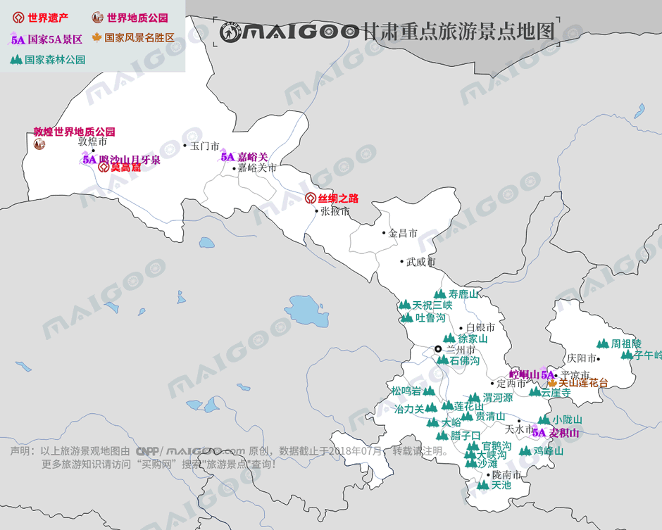

| | | | | |
| - | - | - | - | - |
|<b>别名</b>|甘、陇、陇右、雍凉、陇原||<b>著名景点</b>|莫高窟、麦积山、崆峒山、嘉峪关、鸣沙山月牙泉、拉卜楞寺等|
|<b>行政区类别</b>|省级行政区||<b>机 场</b>|兰州站、兰州西站、天水站、嘉峪关站、武威站、金昌站、敦煌站等|
|<b>所属地区</b>|中国西北||<b>火车站</b>|乌鲁木齐站、喀什站、哈密站等|
|<b>下辖地区</b>|12个地级市、2个自治州||<b>车牌代码</b>|甘A/B/C/D/E/F/G/H/J/K/L/M/N/P|
|<b>电话区号</b>|0930-0939、0941、0943||<b>GDP</b>|-|
|<b>邮政区码</b>|730000-747000||<b>人均GDP</b>|-|
|<b>地理位置</b>|中国西北内陆、黄河上游、六盘山以西||-|-|
|<b>面 积</b>|42.59万平方千米||-|-|
|<b>人 口</b>|2625.71万人（2017年常住人口）||-|-|
|<b>气候条件</b>|温带季风气候、亚热带季风气候、温带大陆气候、高山高原气候||-|-|
| <b>甘肃生活文化</b> | <b>甘肃民间特色文化</b> | <b>甘肃曲艺文化</b> | <b>甘肃建筑文化</b> | <b>甘肃宗教文化</b> |
| - | - | - | - | - |
| <a href="javascript:;" onclick="live(this);">习俗/民俗</a> | <a href="javascript:;" onclick="feature(this);">大地湾文化</a> | <a href="javascript:;" onclick="art(this);">甘肃陇剧</a> | <a href="javascript:;" onclick="building(this);">甘肃建筑风格</a> | <a href="javascript:;" onclick="religion(this);">甘肃庙宇/庙会</a> |
| <a href="javascript:;" onclick="live(this);">方言文化</a> | <a href="javascript:;" onclick="feature(this);">伏羲文化</a> | <a href="javascript:;" onclick="art(this);">甘南藏戏</a> | - | - |
| <a href="javascript:;" onclick="live(this);">节日文化</a> | <a href="javascript:;" onclick="feature(this);">陇东皮影</a> | - | - | - |
| <a href="javascript:;" onclick="live(this);">嫁娶文化</a> | <a href="javascript:;" onclick="feature(this);">甘肃花儿</a> | - |-|-|
| <a href="javascript:;" onclick="live(this);">饮食文化</a> | <a href="javascript:;" onclick="feature(this);">兰州鼓子</a> | -|-|-|
| <a href="javascript:;" onclick="live(this);">甘肃禁忌</a> | - |-| -|-|
## <i class="fa fa-file-text-o"></i>&nbsp;目录（Table of Contents）
+ [I. 总路线图（参考"内蒙古"）](neimenggu.html)
+ [II. 景点](#two)
+ [III. 路线规划（参考"内蒙古"）](neimenggu.html)
<h2 id="two"><i class="fa fa-star-o"></i>&nbsp;景点</h2>
